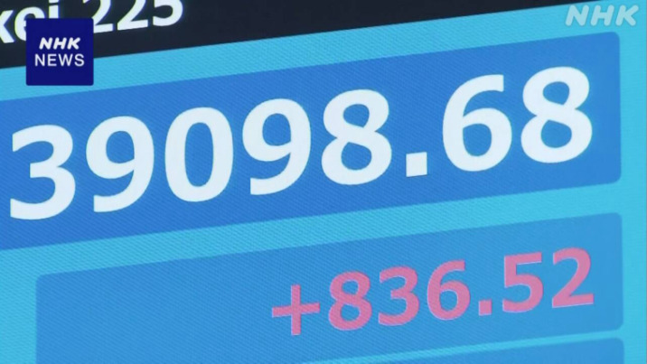

気になるニュース
日経平均株価 バブル期の史上最高値を更新

2024年2月22日の東京株式市場、日経平均株価は、
バブル期の1989年12月29日につけた終値としての史上最高値を更新。
3万9098円68銭まで上昇した。
日経平均株価がバブル絶頂期の水準を超えたことで、
日本経済がバブル崩壊後、
失われた30年と呼ばれた低迷期を
本格的に脱することができるかが焦点となります。
引用 時事問題2024 面接や受験に役立つニュースをまとめました→
記事ページへ
気になる理由
バブル期の史上最高値と聞いて、どんなものか想像はできないけど、
凄く裕福な時代だったということを習ったことがあるので
それ以上となると、たとえ数時間の出来事であっても
未来が明るくなるニュースだと思うので選びました。
私もバブル期のような時代がくるなら経験したいし、
私たちの生まれた平成が不況の年なんて言われるのは癪で
だからこそ、これからの未来が明るくなってほしいです。